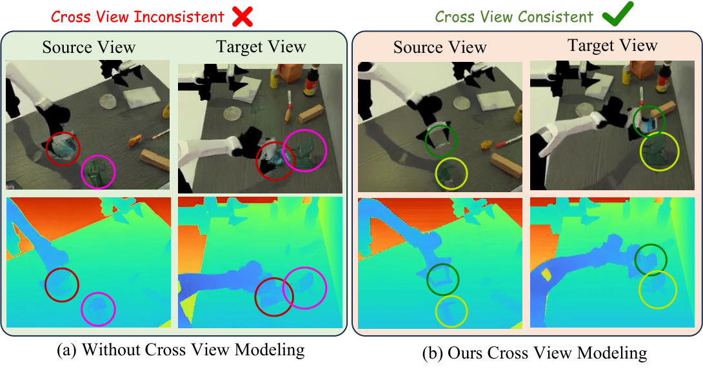
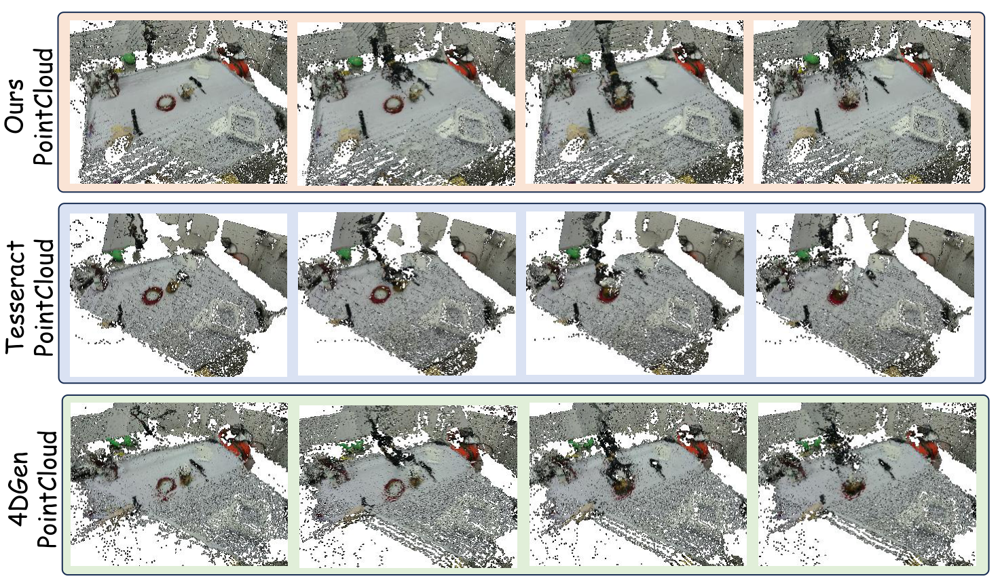
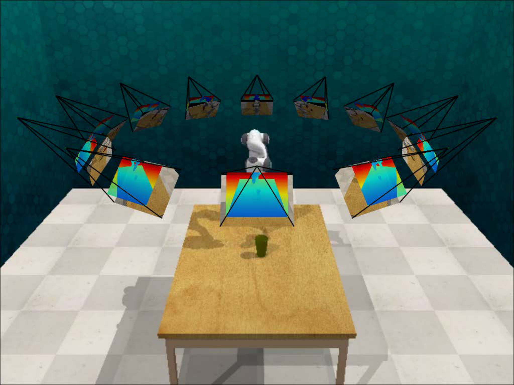
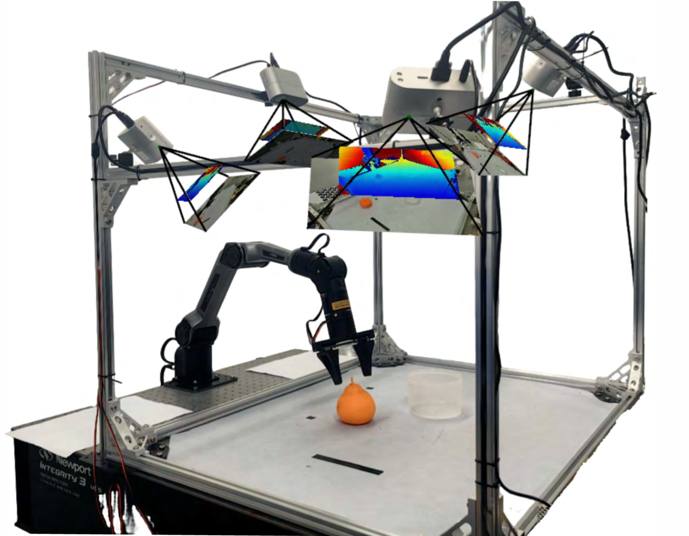
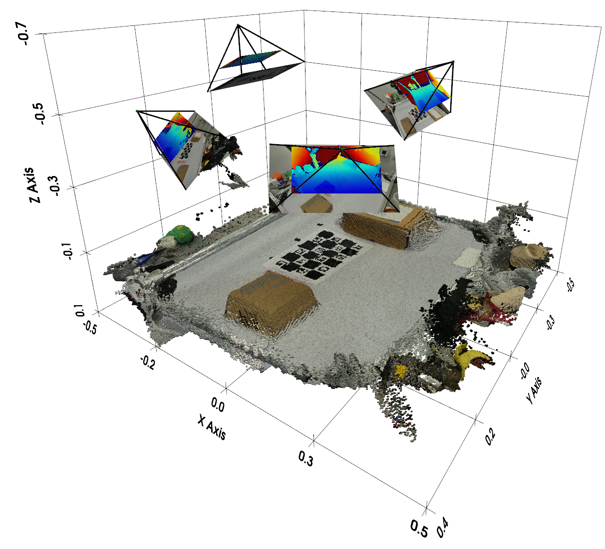
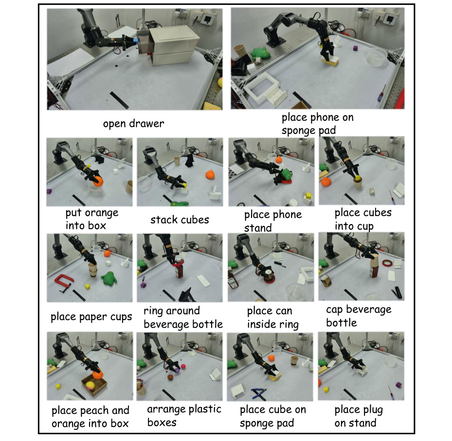

MVISTA-4D: View-Consistent 4D World Model with Test-Time Action Inference for Robotic Manipulation
1. 论文速览
| 论文要解决什么 | 解决 imagine-then-act 机器人框架中的两个瓶颈：第一，现有世界模型多为 2D 或单视角 RGB-D，无法得到完整、跨视角一致的 4D 场景，遇到遮挡和接触操作时几何不稳；第二，把生成的未来转成动作通常依赖 inverse dynamics，但同一视觉转移可由多种动作解释，逐步 IDM 天然 ill-posed。 |
|---|---|
| 作者的方法抓手 | 抓手是同时改 world model 和 act stage。世界模型侧，基于 WAN2.2 TI2V 5B DiT，设计 RGB/depth 的 cross-modality fusion、球坐标 camera embedding、epipolar-line constrained deformable cross-view attention，生成多视角 RGB-D。动作侧，把整段动作序列压缩成 TCN-VAE trajectory latent/style code，测试时通过反向传播优化 latent 使生成结果匹配 imagined future，再由 residual IDM 做局部动作修正。 |
| 最重要的结果 | 4D 生成上，方法在 RLBench、RoboTwin 和真实数据的 FVD、depth、point cloud CD/EMD 等几何指标上多数最优；例如真实数据 CD 从 4DGen 的 17.32 降到 13.06，EMD 从 15.61 降到 14.37。操作成功率上，RLBench 72.6、RoboTwin 43.0，均高于 P-ACT、UniPi*、4DGen、TesserAct；真实机器人 6 个任务中 5 个任务超过 TesserAct。 |
| 阅读时要注意的点 | 重点不是“又一个 4D 生成模型”，而是三个接口是否真的闭合：多视角 RGB-D 生成是否提升可融合几何；trajectory latent 是否比逐步 action conditioning 更稳定；test-time latent optimization + residual IDM 是否缓解了 inverse dynamics 的多解性。读表时也要注意作者常在 RGB 指标和几何指标之间取舍，主张主要建立在几何一致性和下游 manipulation 成功率上。 |

一句话贡献
论文把多视角几何一致的 RGB-D 4D 生成和测试时轨迹 latent 反推动作结合起来，用更完整的动态几何支撑机器人 manipulation。
关键词
4D World Model Multi-view RGB-D Generation Cross-view Attention Trajectory Latent Residual IDM
2. 研究问题与动机
2.1 为什么需要多视角 4D world model
world-model-based manipulation 通常先预测未来观察，再从未来观察中推动作。这种 imagine-then-act 范式的关键是：想象出来的未来必须足够接近物理可执行场景。仅生成 RGB 视频时，画面可以看起来合理，但深度、遮挡、物体相对位置和接触几何可能不一致；这会让后续动作推理建立在错误几何上。
TesserAct 这类方法已经把 RGB-DN/RGB-D 引入 world model，但很多仍是单视角输出。单视角会导致隐藏面和遮挡区域缺失，融合出的 3D 结构不完整。MVISTA-4D 的目标是让模型从单个 RGB-D observation 出发，“补想象”其他视角，并在时间上保持同一个动态场景。
2.2 为什么 inverse dynamics 不够
从生成未来到动作的常见方式是 inverse dynamics：给定 \(\hat{o}_t,\hat{o}_{t+1}\) 预测 \(a_t\)。但在机器人操作中，同样的视觉变化可能由多个动作产生，局部观察还可能缺失接触信息；因此逐步 IDM 容易不适定。作者认为动作轨迹本身具有低维结构和强时间相关性，应该用 trajectory-level latent 表达，而不是把每个 action step 硬对齐到每个视频帧。
4. 方法详解
4.1 问题定义与 diffusion 基础
输入为参考视角 RGB-D observation \(\mathbf{o}_0=(\mathbf{I}_0,\mathbf{D}_0)\)、参考相机外参 \(\mathbf{T}_0\)、目标视角外参 \(\{\mathbf{T}_i\}_{i=1}^{N}\) 和语言指令 \(l\)。模型输出参考视角与所有目标视角同步的未来 RGB-D 序列。生成后可用 camera intrinsics/extrinsics back-project 并 fuse 成动态 point cloud sequence。
扩散模型使用 latent video diffusion / flow matching。Forward path 为：
推理时从高斯噪声出发，用 Euler steps 解 probability flow ODE，并通过 VAE decoder 得到 RGB-D 视频。
4.2 输入格式策略
作者采用结构化 tokenization：同一视角内部 RGB 和 depth 按 width-wise concatenation 放在相邻 token 位置，鼓励同一空间位置的 appearance/geometry 交互；不同视角按 height-wise concatenation 组织，促进结构级跨视角信息交换。因为视角间像素级对齐受 parallax/occlusion 影响，真正的几何对应由 cross-view module 处理。
4.3 Feature Integration Across Modalities
为了让共享 backbone 区分 RGB appearance token 和 depth geometry token，作者为两个模态加入 learnable modality token：
在每个 DiT block 的标准 self-attention 之前，插入 local cross-modality attention。对位置 \(i\)，只在几何 token grid 的局部邻域 \(\mathcal{N}_r(i)\) 中做 appearance-to-geometry attention，反向也对称执行：
局部窗口降低了全局 cross-attention 的匹配成本，也给 RGB-depth 对齐提供局部几何先验；gated residual 则避免在噪声或错位时强行融合坏信息。

4.4 Learning Geometric Consistency Across Views
视角 token 不用普通可学习 embedding，而是直接由 camera embedding 提供。作者没有 flatten \(3\times4\) extrinsic matrix，而是围绕共同 look-at point \(\mathbf{p}\) 用球坐标表示相机。首先估计所有相机 optical axes 最近的点：
然后用 \(\mathbf{r}_v=\mathbf{c}_v-\mathbf{p}\)、\(\rho_v=\|\mathbf{r}_v\|_2\) 计算 yaw、pitch、roll，并对角度使用 \(K=2\) 的 Fourier features，拼接 \(\log(\rho_v)\)，得到 13-D camera embedding：
跨视角融合使用 geometry-aware deformable cross-view attention。给定 view \(v\) 的 query token，在另一视角 \(u\) 上沿对应 epipolar line 均匀采样 \(K\) 个候选 key/value；再用 MLP 根据 query、初始 key feature 和相似度预测小 offset，修正粗 latent resolution 下的错位：

4.5 Trajectory Conditioning as a Style Code
动作轨迹是生成机器人运动的关键条件。逐步把动作序列对齐到视频帧会引入控制频率和视频帧率的脆弱对应，也容易暴露像素中弱可见的高频控制细节。作者改用 TCN-VAE 把整段动作压缩为低维 trajectory latent/style tokens：
论文中 \(\mathbf{z}\in\mathbb{R}^{S\times C=32}\)，作为 \(S\) 个 style tokens 通过 cross-attention 注入生成器。为了避免生成器忽略轨迹条件，训练时还加 latent-consistency head，从最后层 hidden tokens 重建 \(\hat{\mathbf{z}}\)，并用 \(\mathcal{L}_{traj}=\|\hat{\mathbf{z}}-\mathbf{z}\|_2^2\) 约束；该 head 只训练时使用，推理丢弃。
4.6 Test-time Action Optimization 与 Residual IDM
推理时先用 text-only conditioning 生成一个动态 rollout \(\bar{\mathbf{V}}\)。然后冻结该 rollout，从随机初始化的 trajectory latent \(\mathbf{z}\) 开始，通过反向传播寻找最能复现该 rollout 的条件 latent：
这比直接优化全长逐步动作更稳定，因为搜索空间是学习到的低维轨迹流形。随后 residual IDM 进一步修正：给定连续点云 \(\mathcal{P}_t,\mathcal{P}_{t+1}\) 和 prior action \(\mathbf{a}_t^{prior}\)，预测残差 \(\Delta\mathbf{a}_t\)：
这样 IDM 不再从零解释视觉转移，而是在已有轨迹意图附近做局部调整，缓解 inverse dynamics 的多解性。
5. 实验与结果
5.1 数据集与评估
4D generation 在两个 synthetic 数据集和一个真实数据集上评估。RLBench 收集超过 8,000 条轨迹，RoboTwin2 超过 10,000 条轨迹，各含 10 个任务；每个 episode 有 16 个 RGB-D camera views、已知 camera parameters、文本指令和动作序列。真实数据由 4 个 RGB-D 摄像头和真实机械臂平台采集，包含 14 个 manipulation tasks，并记录对应动作。
指标分为 appearance、depth 和 point cloud：PSNR、SSIM、FVD；AbsRel、RMSE、\(\delta_1\)；Chamfer Distance (CD) 和 EMD。主表中的 SSIM、AbsRel、RMSE、CD、EMD 均按 \(10^2\) 缩放。
5.2 4D scene generation 主结果
| Dataset | Method | PSNR ↑ | SSIM ↑ | FVD ↓ | AbsRel ↓ | RMSE ↓ | CD ↓ | EMD ↓ |
|---|---|---|---|---|---|---|---|---|
| RLBench | UniPi* | 23.88 | 91.7 | 19.94 | 117.9 | 43.2 | 15.0 | 20.6 |
| RLBench | 4DGen | 22.25 | 87.1 | 20.51 | 91.8 | 29.3 | 10.9 | 16.0 |
| RLBench | TesserAct | 23.86 | 92.8 | 27.77 | 91.8 | 29.4 | 11.0 | 16.3 |
| RLBench | Ours | 23.31 | 90.8 | 18.57 | 90.5 | 29.1 | 9.6 | 15.3 |
| RoboTwin | UniPi* | 22.98 | 89.2 | 22.18 | 5.52 | 18.13 | 9.88 | 20.53 |
| RoboTwin | 4DGen | 22.18 | 85.2 | 24.61 | 3.00 | 13.90 | 7.18 | 10.62 |
| RoboTwin | TesserAct | 22.65 | 89.8 | 27.29 | 3.71 | 15.07 | 7.11 | 10.28 |
| RoboTwin | Ours | 22.91 | 90.2 | 21.93 | 2.60 | 12.30 | 6.51 | 9.90 |
| Real | UniPi* | 22.53 | 90.62 | 28.62 | 39.95 | 42.69 | 58.41 | 63.22 |
| Real | 4DGen | 21.34 | 89.75 | 25.60 | 23.36 | 29.61 | 17.32 | 15.61 |
| Real | TesserAct | 22.27 | 91.50 | 50.79 | 30.56 | 33.17 | 38.47 | 34.65 |
| Real | Ours | 21.82 | 89.98 | 23.08 | 20.79 | 25.11 | 13.06 | 14.37 |
这张表的关键是几何指标：MVISTA-4D 在 point cloud CD/EMD 和 depth 指标上基本最强，而 RGB PSNR/SSIM 不总是第一。也就是说，作者并不主张它是纯视觉质量最强的视频生成模型，而是几何一致性更适合 manipulation。


5.3 Cross-view / cross-modality 消融
| Method | PSNR ↑ | SSIM ↑ | FVD ↓ | AbsRel ↓ | RMSE ↓ | CD ↓ | EMD ↓ |
|---|---|---|---|---|---|---|---|
| w/o view | 21.47 | 88.3 | 24.85 | 3.34 | 14.30 | 8.34 | 17.50 |
| EA | 22.43 | 89.2 | 23.36 | 3.03 | 12.70 | 7.33 | 12.50 |
| w/o mod | 20.16 | 83.8 | 25.25 | 4.03 | 16.77 | 7.51 | 16.80 |
| Ours | 22.91 | 90.2 | 21.93 | 2.60 | 12.30 | 6.51 | 9.90 |
消融说明两个模块都重要：去掉 cross-view 后 point cloud CD/EMD 明显变差；去掉 cross-modality 后 RGB/depth 同步更差，PSNR、SSIM、FVD 和 depth 指标都下降。
5.4 Embodied action planning
| Dataset | P-ACT | UniPi* | 4DGen | TesserAct | Act Head | Full IDM | w/o R-IDM | Full Model |
|---|---|---|---|---|---|---|---|---|
| RLBench | 60.4 | 34.6 | 47.0 | 67.3 | 72.5 | 68.8 | 69.0 | 72.6 |
| RoboTwin | 20.5 | 16.3 | 40.2 | 33.9 | 42.5 | 41.7 | 42.8 | 43.0 |
Full model 的提升相对主 baseline 更明显：RLBench 比 TesserAct 高 5.3，比 P-ACT 高 12.2；RoboTwin 比 4DGen 高 2.8，比 TesserAct 高 9.1。动作侧消融显示 Act Head 很强，但 full model 仍最好；Full IDM 和 w/o R-IDM 低于 full model，说明 trajectory latent optimization 和 residual correction 都有贡献。
| Method | Arrange Boxes | Cap Bottle | Open Drawer | Place Fruits | Put Orange | Stack Cubes |
|---|---|---|---|---|---|---|
| TesserAct | 7 | 27 | 37 | 17 | 66 | 45 |
| Ours | 15 | 33 | 56 | 23 | 63 | 50 |
真实机器人 6 个任务中，MVISTA-4D 在 5 个任务上超过 TesserAct，尤其 Open Drawer 从 37 提升到 56。Put Orange 略低于 TesserAct，说明多视角几何并非每个任务都一定提升。
5.5 附录：多视角推理模式与 view 数量
[附录 Analysis of two Modes] 作者支持两种多视角生成：Mode-1 一次采样生成所有 view，把 view latents 沿 height 连接；Mode-2 先生成参考 views，再用 masked completion 补全额外 views。论文默认使用 Mode-2，因为更稳定、质量更高。主实验采用 3-view 设置，因为多数 baseline 至多支持两视角，而 3 views 已带来主要收益。
| Num Views | 1 | 2 | 3 | 4 | 5 |
|---|---|---|---|---|---|
| RLBench success | 68.6 | 71.5 | 72.6 | 72.9 | 73.1 |
| Time cost | 0.78 | 0.85 | 1.00 | 1.20 | 1.35 |
从 1 到 3 views 提升明显，3 到 5 views 边际收益很小但耗时增长，因此 3 views 是本文默认的效率-准确性折中。


5.6 附录：per-task 与失败案例
[附录 Additional Task-Level Details] RLBench per-task 表显示，Ours 在 Unplug Charger 55、Close Drawer 91、Close Microwave 75、Open Drawer 98、Pick Up Cup 62、Play Jenga 97、Push Button 89 等任务上表现强；RoboTwin 中在 Adjust Bottle 69、Beat Hammer 42、Click Bell 38、Grab Roller 68、Lift Pot 42、Place Container 72 上领先。


5.7 附录：更多定性生成


6. 复现要点
6.1 训练策略
[附录 Implementation Details] 作者对每个 dataset 训练单独模型。对于同一任务不同操作物体，保持固定 instruction template，只替换 object noun，例如 “pick up the coke bottle” 和 “pick up the can”。
Diffusion input 是 \(B\times T\times C\times h\times w\) 的 noise latent。训练时以 0.5 概率只提供第一视角第一帧作为条件；以 0.5 概率提供第一视角完整 video latent，并随机 mask 任意数量帧。这让模型同时学习从单帧生成 4D dynamics 和补全缺失 timesteps。
Trajectory latent 在早期训练总是提供；后期逐渐增加 mask trajectory latent 并替换为 null trajectory token 的概率。这样模型既能 text-only 生成动态场景，也保留 action-conditioned generation 能力；null token 在测试时可作为可优化变量。
6.2 模型与优化配置
- Backbone: WAN2.2 TI2V 5B DiT。
- Learning rate: \(10^{-5}\)。
- Scheduler: 1000-step linear warmup 后 constant schedule。
- Optimizer: AdamW，\(\epsilon=10^{-8}\)，weight decay 0.01。
- Initialization: 原始 blocks 全部放开 fine-tuning；新增 blocks 的 weights 和 bias 初始化为 0，以保护 WAN2.2 prior。
- R-IDM: 点云每步裁剪操作区域，back-project RGB-D，FPS 采样 8192 points，PointNet-style encoder + MLP 预测动作残差。
6.3 仿真与真实平台
[附录 Simulation Setup] 仿真中在场景周围均匀放置 12 个相机，相邻水平角间隔 30 度，朝向机器人工作台中心；训练随机采样 3 个 viewpoints，并要求采样视角中至少一个相机角间隔小于 90 度。所有相机分辨率 320 × 240，RLBench FOV 为 40 度，RoboTwin FOVY 为 37 度。


[附录 Real-World Robot Dataset] 真实系统使用 4 个 Orbbec Femto Bolt RGB-D ToF cameras 和 2 个 AgileX Piper robotic arms；采集工作站为 Intel i9-14900K CPU + NVIDIA RTX 4090 GPU。相机外参先用 ChArUco board 粗标定，再将 RGB-D back-project 到点云并对重叠区域做 ICP refinement。遥操作采用 leader-follower，follower 以 200 Hz 直接 joint-space mapping 跟随 leader；相机以 15 FPS、1280 × 720 同步记录，后处理降采样到 320 × 180。



6.4 复现风险清单
- 多视角数据成本: 需要同步 RGB-D、多相机外参和动作轨迹；真实数据采集门槛高。
- 相机标定敏感: 方法依赖准确 extrinsics；附录 limitation 明确指出 extrinsics 或 robot kinematics 改变会降低一致性和动作质量。
- 测试时优化开销: action inference 需要多步 backpropagation 优化 trajectory latent，增加 latency。
- WAN2.2 依赖: 使用 5B DiT backbone，复现实验需要相当算力和可用预训练权重。
- 动作-视频对齐: 虽然 trajectory latent 避免逐帧动作硬对齐，但 residual IDM 仍需要高质量 action labels 和点云裁剪策略。
7. 分析、局限与边界
7.1 这篇论文最有价值的地方
最有价值的地方是把“4D world model 是否真的能帮助机器人执行”做成了一个相对闭合的系统：不是只展示多视角生成图，也不是只用 IDM 从单视角点云猜动作，而是从多视角 RGB-D 生成、几何融合、轨迹 latent 反推，到 residual IDM 修正和真实机器人执行，形成完整链条。
第二个价值点是动作接口设计。trajectory latent 作为 style code 把动作从逐步控制信号提升为整段轨迹先验；测试时优化该 latent，本质上是在 learned action manifold 上搜索与 imagined future 一致的动作。这比传统 IDM 的逐步多解问题更有结构约束。
7.2 结果为什么站得住
结果站得住主要因为证据覆盖了生成质量、几何质量、下游成功率和关键模块消融。4D 生成表中，方法在三个数据集的 depth/point cloud 指标上稳定领先；action planning 表中，RLBench 和 RoboTwin 都超过强 baseline；真实机器人表明提升不是只在仿真成立；cross-view、cross-modality、camera embedding、view 数量、R-IDM 等消融都能对应到具体设计选择。
同时，附录失败案例并没有回避缺陷：open-drawer 方向错误和 contact-sensitive miss 说明该方法虽然能生成高层意图和更完整几何，但细粒度接触、动作方向和执行闭环仍会放大小误差。
7.3 论文明确局限
- Latency: test-time action optimization 需要多步迭代，会降低实时响应能力。
- Calibration dependency: 方法依赖准确 camera 和 robot calibration，外参或机器人运动学变化会影响 cross-view consistency 和 action quality。
- Contact precision: 失败案例显示，生成未来捕获高层意图并不保证接触几何精确，near-miss contacts 仍会导致失败。
7.4 可以追问的边界
- 闭环控制: 当前动作从生成 rollout 推出，若执行中偏离，是否需要重新生成和重新优化 latent？论文没有系统给出闭环频率和稳定性分析。
- 更多视角的边际收益: 3 views 后收益变小，但耗时增加；真实复杂遮挡场景中是否仍是 3 views 最优，需要更多任务验证。
- 真实数据规模: 真实机器人只展示 6 个任务成功率表，虽然有 14-task 数据集描述，但更大规模真实评估会更有说服力。
- 物理变量缺失: RGB-D point cloud 不显式建模力、摩擦和接触状态，精细 manipulation 仍可能需要 contact-aware constraints 或 tactile/force sensing。
8. 组会问答准备
Q1: MVISTA-4D 和 TesserAct 的核心区别是什么？
TesserAct 主要从 RGB-DN/RGB-D video 重建 4D scene，但偏单视角；MVISTA-4D 从单视角输入生成多视角 RGB-D，并显式做 cross-view geometry consistency。同时它还通过 trajectory latent test-time optimization 反推动作，而不是只依赖传统 IDM。
Q2: 为什么要用 trajectory latent，而不是逐步 action conditioning？
逐步 action 和视频帧之间存在控制频率/帧率不匹配，且像素中不一定能看出高频控制细节。trajectory latent 把整段动作压缩到低维流形，表达轨迹节奏、平滑性和阶段结构，更适合生成和测试时优化。
Q3: Cross-view attention 为什么沿 epipolar line 采样？
已知相机参数时，一个视角中的点在另一个视角中应落在对应 epipolar line 上。沿这条线采样能大幅减少候选 token，同时加入 deformable offset 修正 latent resolution 粗和遮挡带来的偏差。
Q4: 最强实验证据是什么？
生成侧是三个数据集上几何指标稳定领先，尤其 point cloud CD/EMD；动作侧是 RLBench 72.6、RoboTwin 43.0 均为最高，真实机器人 6 个任务中 5 个优于 TesserAct。
Q5: 最大短板是什么？
测试时优化带来 latency，系统依赖精确相机/机器人标定，并且在接触敏感或方向歧义任务中仍可能失败。换句话说，它增强了几何和轨迹先验，但还不是完整的实时闭环接触控制系统。